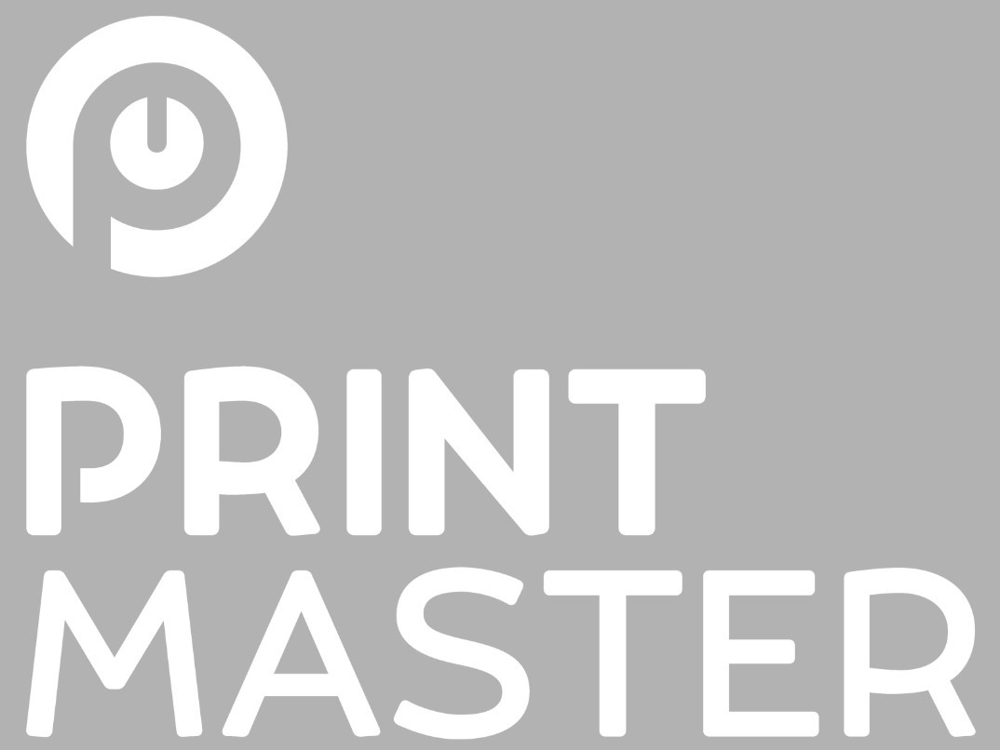

Datos básicos
- Nombre: Edgardo Ezequiel Sarmiento
- Email: eservicesupply@gmail.com
- Edad: 44
- Ciudad: Córdoba,Argentina
- Estudios: Secundario completo
- Ocupación: Servicio técnico especializado
Intereses
- Tecnología
- Música
- Programación
- Lectura
- Fútbol

Un año antes de recibirme de técnico en electrónica comencé a trabajar en la empresa Tecnologías Orbis/Urvitech S.A.
Allí trabajé 5 años en fabricación, armado, testeo y reparación de plaquetas y equipos electrónicos
para electromedicina y radiocomunicaciones.
Luego volví al rubro gráfico (donde había hecho mi primer experiencia laboral).
En un par de años aprendí el oficio en el que fuí desarrollandome, llegando hasta la actualidad todavía con ganas de nuevos desafíos, capacitandome y aprendiendo algo nuevo siempre.
Fuí aprendíz, empleado, y támbien probé suerte como trabajador independiente.
Desde el año 2017 trabajo para la empresa Print Master SRL, donde me desempeño realizando servicio técnico especializado
en fotocopiadoras e impresoras láser de mediano y gran formato.